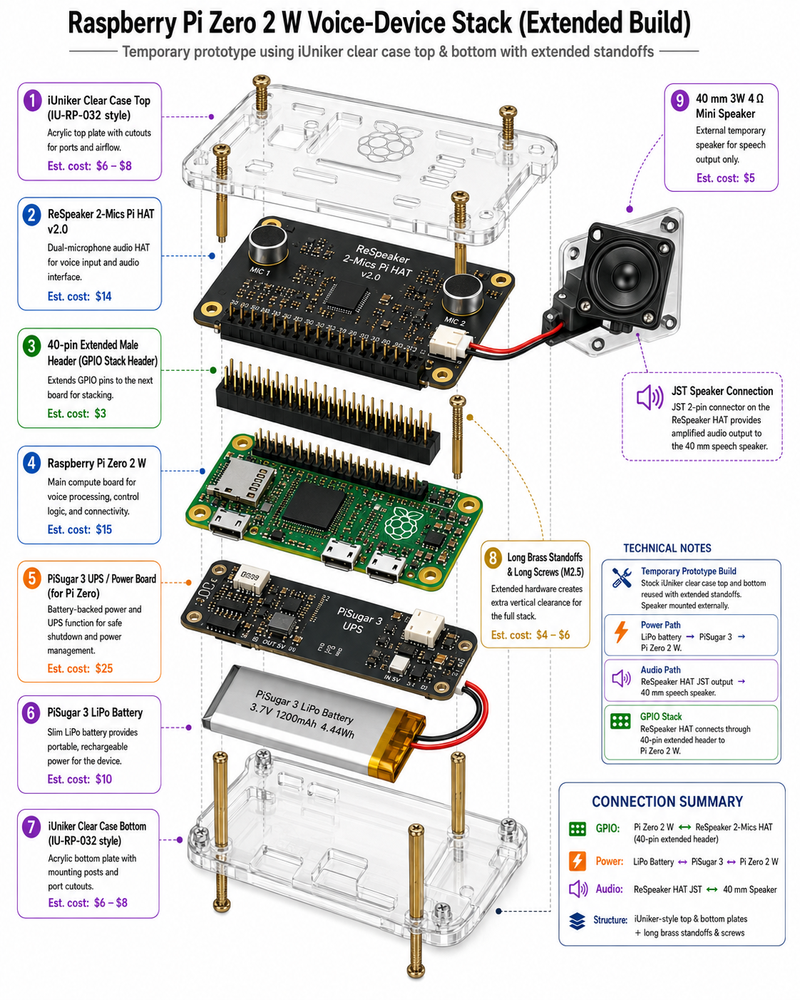
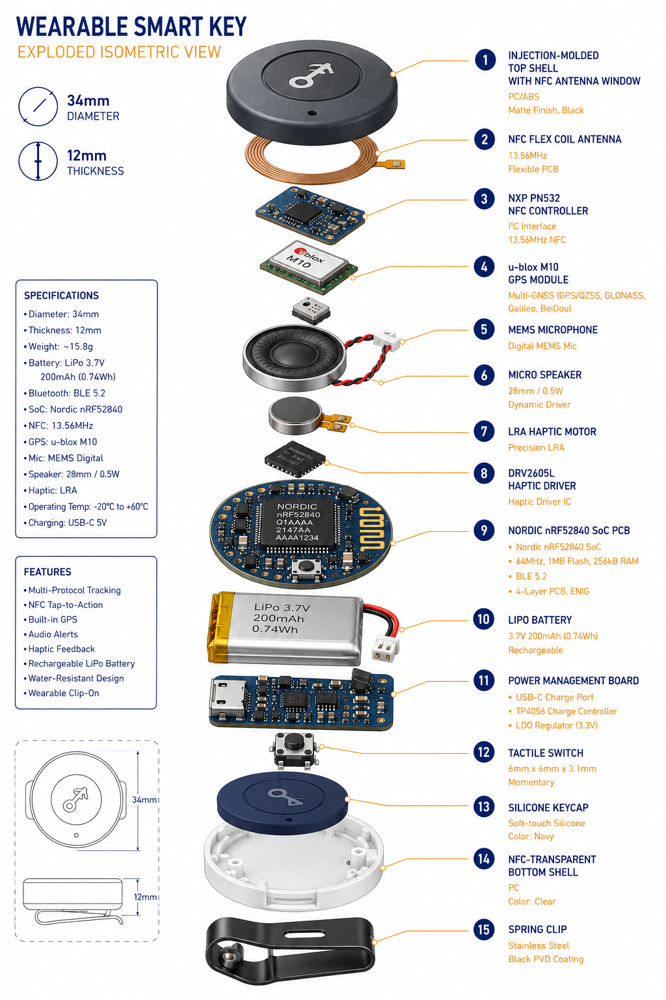
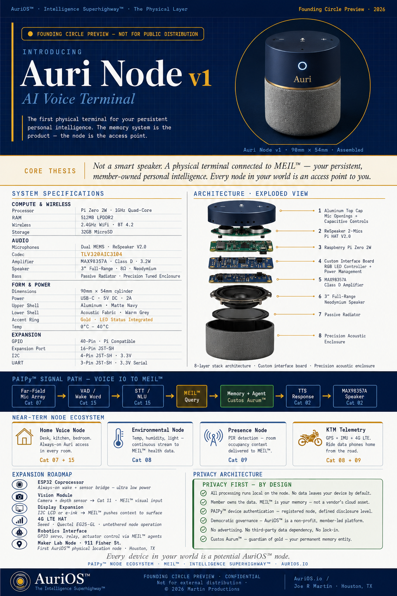
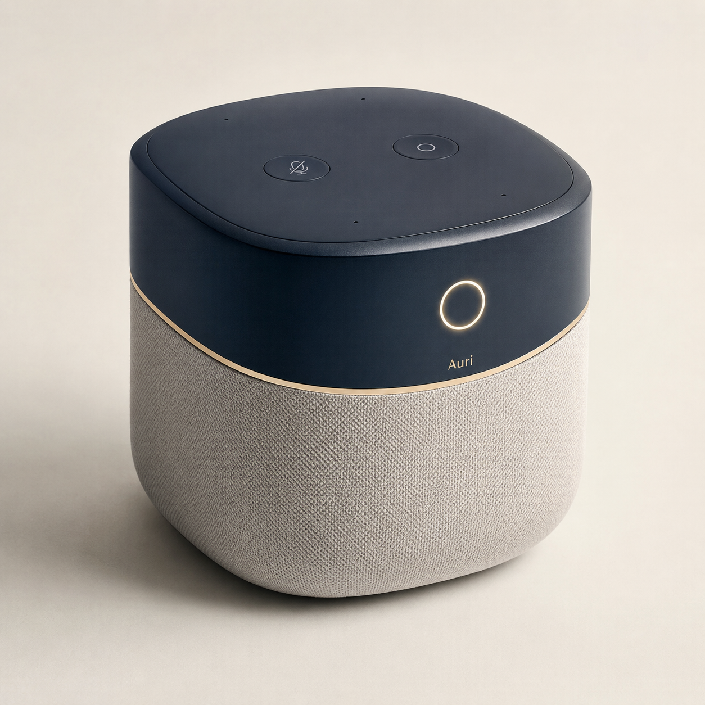

Executive Summary
Sofie Bear is not merely a smart toy. It is the first deliberately designed AuriOS physical node: a small, friendly, voice-based client that listens, speaks, records interactions, and eventually participates in the Sopia project memory layer. The first version should be treated as a bench-tested Raspberry Pi voice terminal inside a teddy bear, not as a sealed toy build from day one.
The corrected recovery picture is important. The work already completed was mainly specification, BOM creation, hardware selection, image preparation for the Raspberry Pi SD card, and system architecture. The evidence does not show that the final runtime code was written. That is good news. It means we are not trying to recover a missing program. We are now ready to build it cleanly in the correct order.
The AuriOS Edge Device Frame
Sofie Bear belongs under the broader heading of AuriOS AI edge devices. In this frame, an edge device is any physical interface that lets AuriOS sense, speak, notify, authenticate, or act in the member's environment. The bear is the first voice IO node. The Auri Button is the silent push-to-talk and identity-key path. The Auri Node is the room-scale voice terminal. The smart key is the wearable node path. All of them are different physical expressions of the same idea: AuriOS should not be trapped in a browser window.
Sofie Bear
The delivery-focused child-safe voice node for the Sopia project. It uses a Pi Zero 2 W, ReSpeaker HAT, speaker, and cloud STT/LLM/TTS services.
Auri Button / Smart Key
The portable silent IO concept. Press to talk, release to send, haptic feedback for private output, and later NFC/GPS identity functions.
Auri Node
The room-scale voice terminal. It is the non-toy version of the same architecture: microphone array, wake word, speech output, and MEIL-connected context.
Placeholder Image Set
Use the images as placeholders while the page evolves. To keep GitHub happy, this HTML references external image files in an assets/ folder instead of embedding images directly into the page.

Raspberry Pi Zero 2 W voice stack'}));" />
Wearable smart key exploded view'}));" />
Auri Node v1 flyer'}));" />
Auri Node product render'}));" />Component Overview and Connection Map
The hardware should be understood as a stack, but it should not be tested as a stack on the first pass. The safe build path is staged. First, the Pi boots by itself. Then the ReSpeaker HAT and speaker are added. Only after the audio chain works should PiSugar power be tested. The bear enclosure is last.
| Component | Role | How it connects | When to attach |
|---|---|---|---|
| Raspberry Pi Zero 2 W | Main Linux computer running Python, network, API calls, and device control. | Boots from microSD. Powered first by micro-USB PWR IN for bare test. | First. |
| MicroSD card | Raspberry Pi OS boot disk and future Sofie Bear app storage. | Inserted into Pi microSD slot. | First. |
| ReSpeaker 2-Mics Pi HAT v2.0 | Microphone array, audio codec, speaker output, and voice input hardware. | Stacks onto 40-pin GPIO header. | After bare Pi boot is proven. |
| 3W / 4Ω speaker | Speech output from Auri. | JST 2-pin cable into ReSpeaker HAT speaker output. | With ReSpeaker test. |
| PiSugar 3 | Portable battery / UPS board. | Pogo pins contact pads on underside of Pi. Do not dual-power. | After USB-powered Pi and audio stack work. |
| Teddy bear enclosure | Physical child-friendly shell. | Speaker mounted toward chest; Pi stack held in internal pouch. | Last. |
Software Build Path
The first software goal is not wake word and not polish. The first goal is a manual end-to-end loop: record audio, transcribe it, send the text to the reasoning layer, generate speech, play it back, and write the interaction to a persistent local log. Once that works, wake word, PiSugar, and bear surgery can follow safely.
Recommended project folder
~/sofie-bear/
README.md
requirements.txt
.env.example
config/
sopia_prompt.txt
sofie_bear.yaml
app/
main.py
audio_input.py
audio_output.py
stt_client.py
llm_client.py
tts_client.py
local_event_log.py
wake_word.py
logs/
audio/
incoming/
outgoing/Should this be a module? Yes. This should be modular from the first file. The bear code is small glue code, but it touches audio, cloud APIs, logging, prompts, and future AuriOS endpoints. Keeping those pieces separated will make the later PAIPy/MEIL integration much easier.
First-Morning Build List
This is the order to use when work starts. The point is to isolate failure. If the Pi does not boot, nothing else matters. If the Pi boots but audio fails, the problem is the audio stack. If the audio stack works but the cloud loop fails, the problem is software/API configuration.
- Prepare the bench. Pi Zero 2 W, flashed microSD, known-good micro-USB power supply, Windows PC, router login, and card reader available.
- Boot bare Pi only. Insert SD card. Power the Pi through the PWR IN micro-USB port. Attach nothing else.
- Watch ACT LED. Look for green LED activity. No activity suggests SD image, power, or board issue.
- Find the Pi on the network. Try
ping sofie-bear.local. If that fails, check the router client list. - SSH in. Use
ssh joermartin1@sofie-bear.localor replace hostname with the Pi IP. - Confirm baseline. Run
hostname,whoami,cat /etc/os-release,df -h, andfree -h. - Update OS. Run
sudo apt update, thensudo apt full-upgrade -y, then reboot. - Install base tools. Add Python, git, venv, ALSA tools, I2C tools, and build-essential.
- Create project folder. Build
~/sofie-bearwith the modular structure above. - Test cloud APIs without audio. First test Claude text response, then TTS file generation. Do not attach ReSpeaker yet.
- Power down. Shut down cleanly before adding hardware:
sudo shutdown now. - Attach ReSpeaker and speaker. Stack the HAT on the GPIO header and plug the speaker into the JST output.
- Test audio devices. Use
arecord -landaplay -l, then record and play back a short WAV. - Build manual loop. Press Enter, record, transcribe, send to Claude, generate TTS, play response, log JSONL.
- Only then add wake word, PiSugar, and bear surgery. These are later steps, not first-morning tasks.
Persistent Conversation Path
There are two practical meanings of persistent conversation. The first is local persistence: every exchange is written to a log file on the Pi. That can happen immediately once the manual loop works. The second is AuriOS persistence: each exchange is written into the Sopia project memory path so AuriOS can retrieve it later. That is the bridge to MEIL/PAIPy and should come after the bench loop works.
| Stage | What it does | Likely timing |
|---|---|---|
| Manual conversation | You speak, bear answers through speaker. | One focused build day after clean boot, assuming audio drivers cooperate. |
| Local persistence | Transcript, response, timestamp, and device ID saved to logs/interactions.jsonl. | Same day or next focused session. |
| AuriOS persistence | Interactions written to Sopia project / AuriOS memory route. | One to two focused sessions after local loop. |
| Memory recall | Bear retrieves prior Sopia/Bear context before answering. | Depends on MQI / retrieval endpoint readiness. |
Risk Log
Repeat smoke event
Risk is controlled by testing bare Pi first, inspecting GPIO solder/header state, using one power source, and not introducing PiSugar until the Pi and audio chain are already proven.
Driver friction
ReSpeaker driver setup may be the highest-friction technical step. Treat it as its own phase. Do not mix it with PiSugar, wake word, or bear assembly.
Too much too soon
Wake word, child speech recognition, MEIL integration, and bear surgery are all real tasks. They should not be attempted before the manual loop works.
Volume and access
Set a software volume ceiling, keep electronics inaccessible, route charging safely, and keep the bear serviceable until testing is complete.